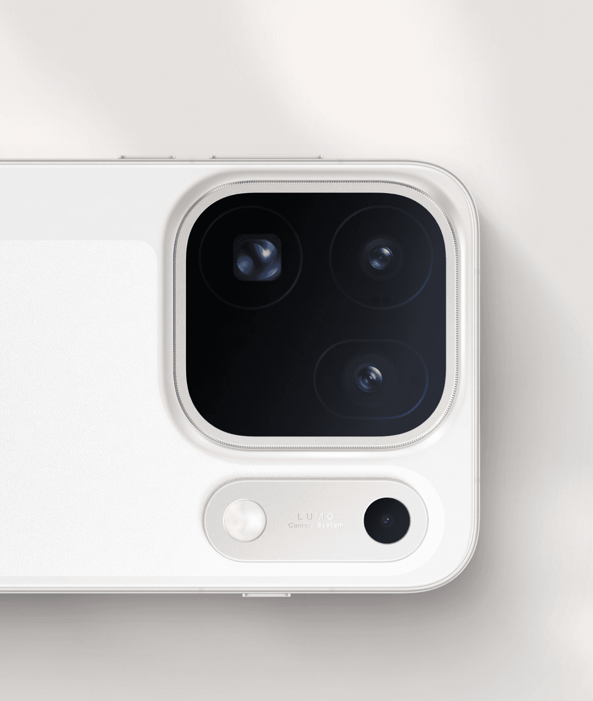
Sistema Óptico
Triple Cámara 200MP
Arquitectura de tres lentes de ultra resolución co-desarrollada con Hasselblad para detalle extremo en cualquier focal.
Fotografía móvil de estudio con sistema Triple Cámara 200MP, sensor True Color de 24 canales, video 8K Log / HDR de 17 pasos, chip Dimensity 9600 Pro (2 nm) y batería 8,000 mAh.
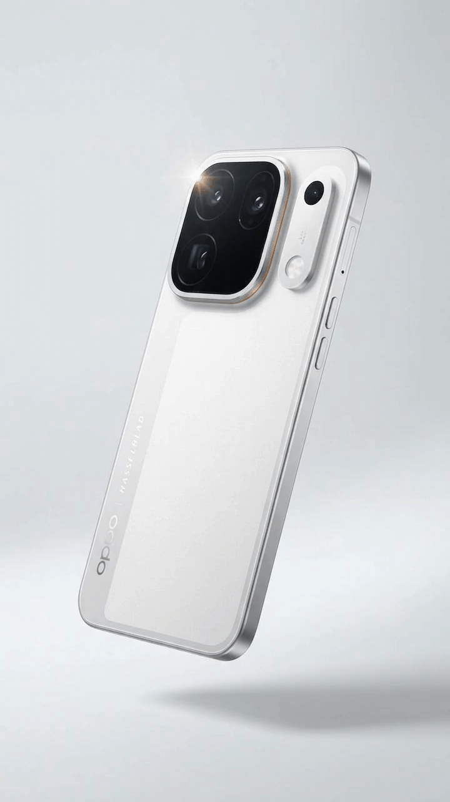

Arquitectura de tres lentes de ultra resolución co-desarrollada con Hasselblad para detalle extremo en cualquier focal.
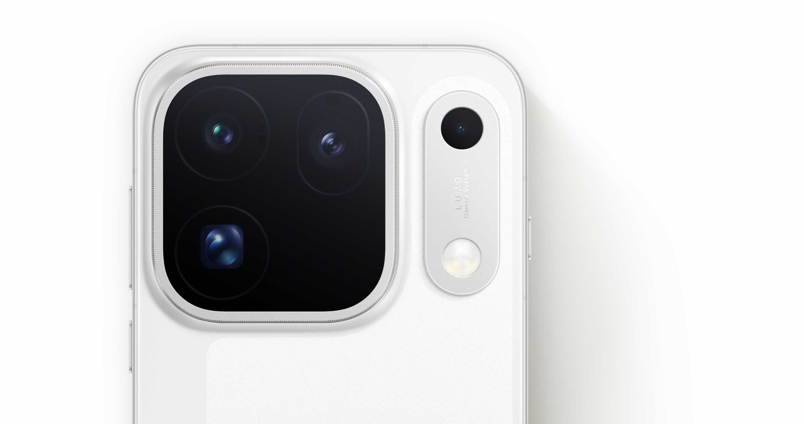
Lectura multiespectral de 24 canales para reproducir tonos de piel y luz ambiental con precisión real.
Rango dinámico de 17 pasos en modo cine y captura Log profesional para edición de color avanzada.
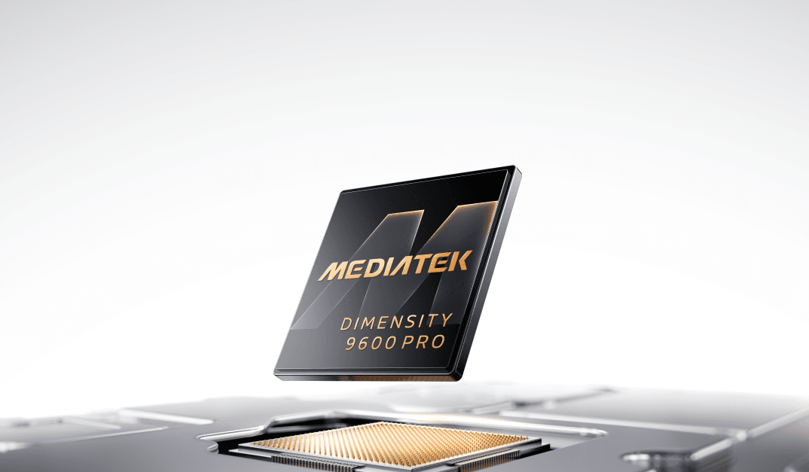
Procesador flagship de 2 nm con motor IA y gráficos de última generación sin calentamiento excesivo.
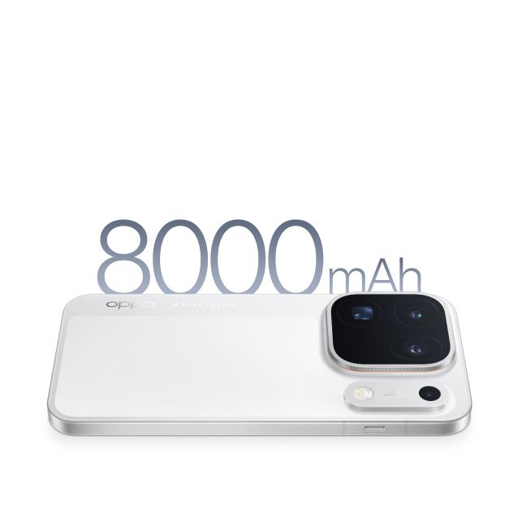
Alta densidad energética en cuerpo delgado para jornadas completas de foto, video 8K y gaming.
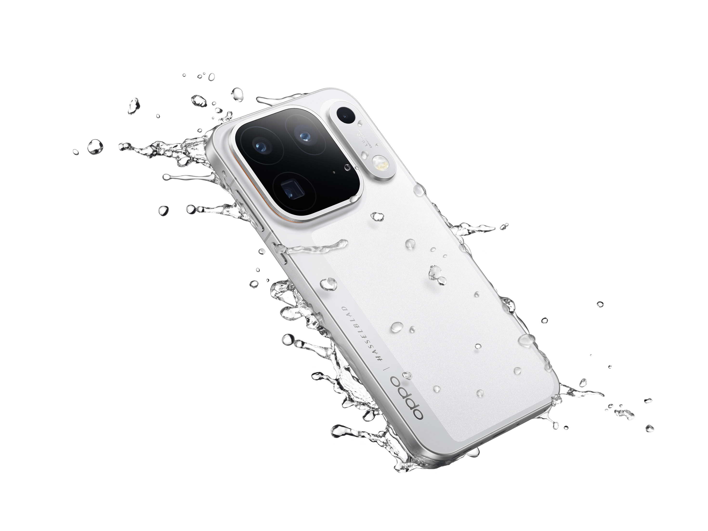
Protección triple contra polvo, inmersión y chorros de agua a alta presión y temperatura.
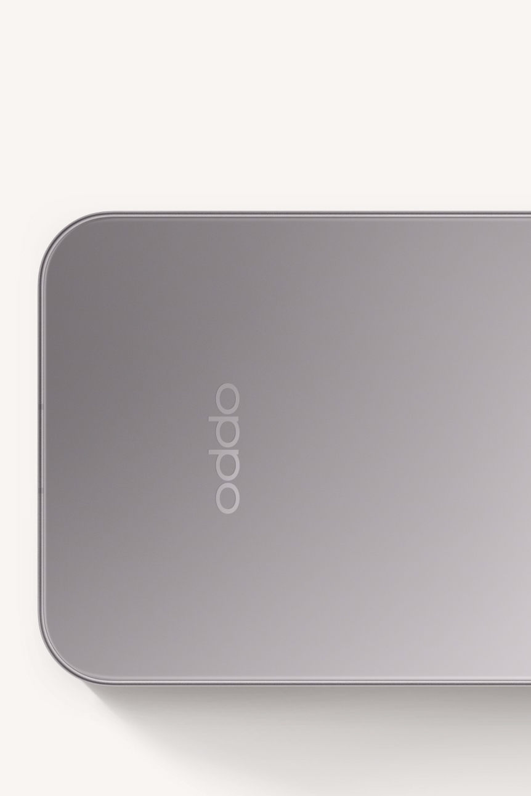
Acabado metálico sobrio con módulo de cámaras integrado de grado profesional.
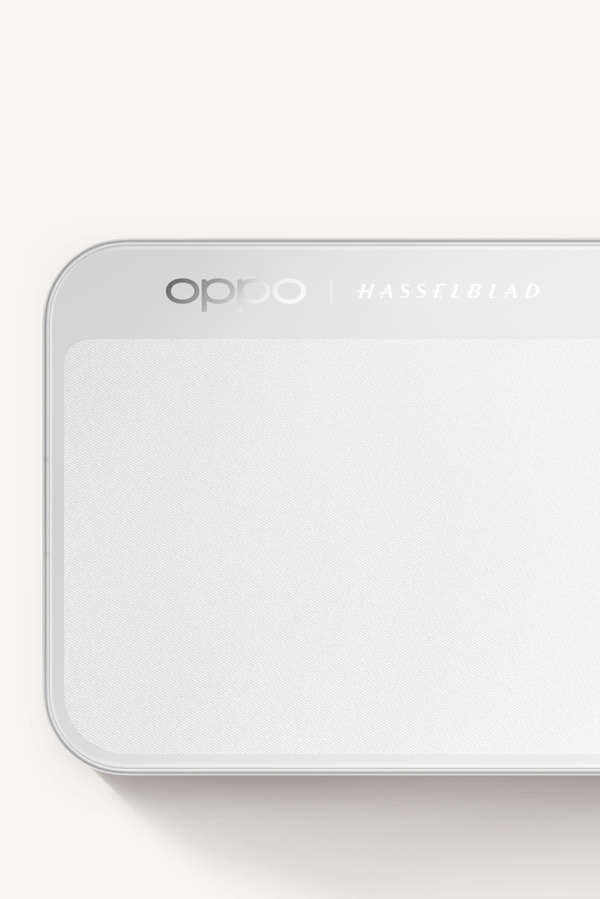
Textura satinada luminosa resistente a huellas en piso de venta.
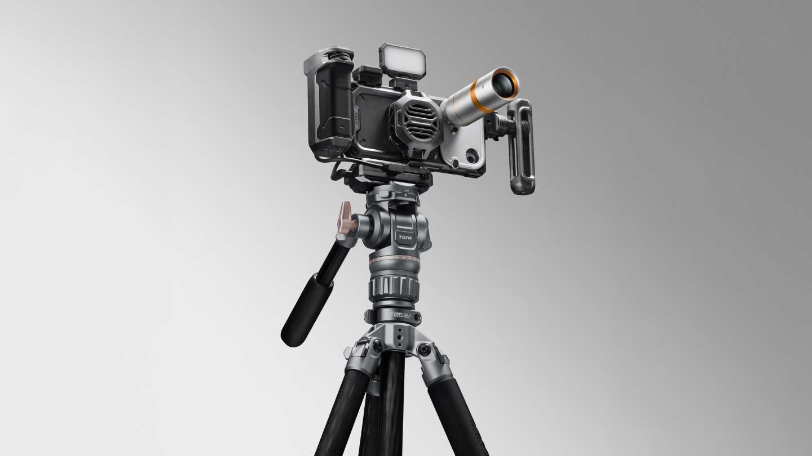
Ecosistema de jaula y accesorios cinematográficos para producción móvil.
Potencia insignia con Cámara Hasselblad 200MP, motor de color y encuadre LUMO, pantalla ProXDR, batería 8,000 mAh y 6 años de fluidez garantizada con ColorOS 17.
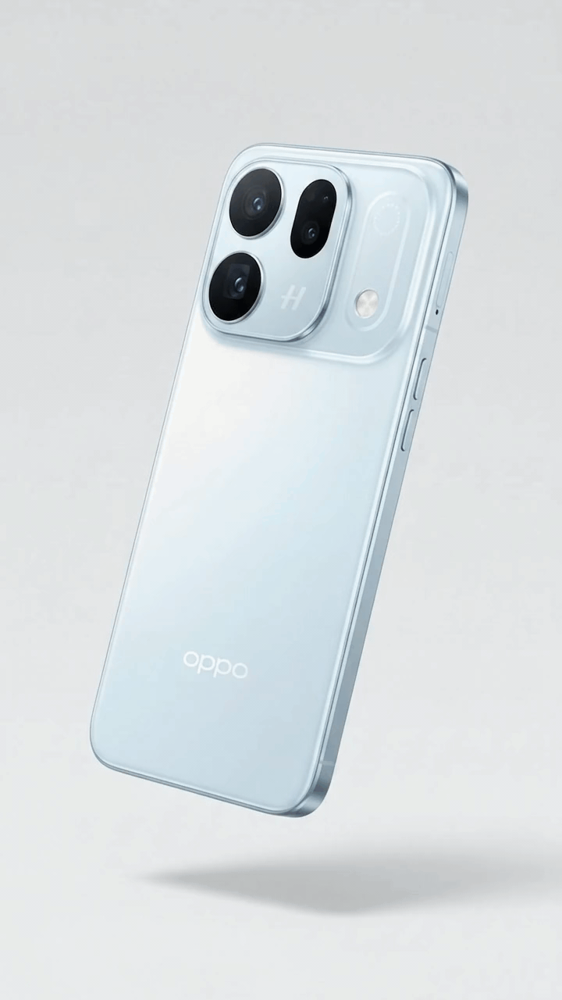
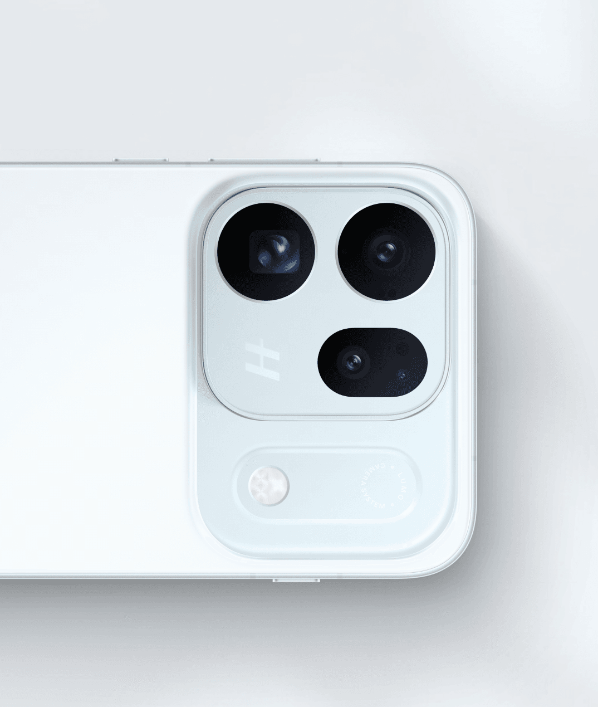
Recortes limpios y texturas nítidas gracias al sensor principal de ultra alta resolución.
Colores fieles en escenas nocturnas y retratos sin saturación artificial.
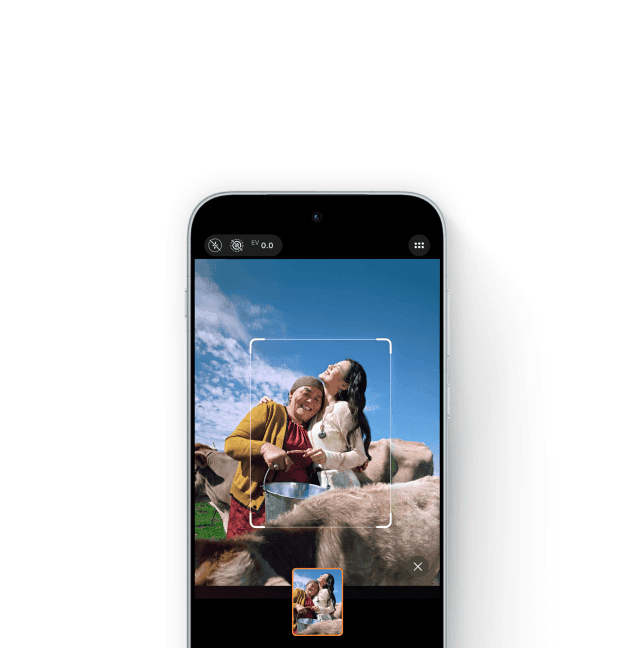
Asistencia de composición y encuadre inteligente para retratos perfectos al primer disparo.
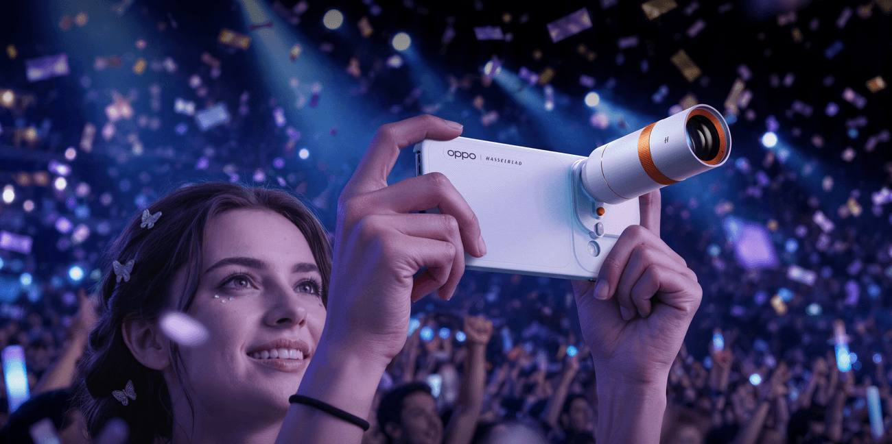
Amplía el alcance telefoto óptico para conciertos, naturaleza y fotografía de distancia.
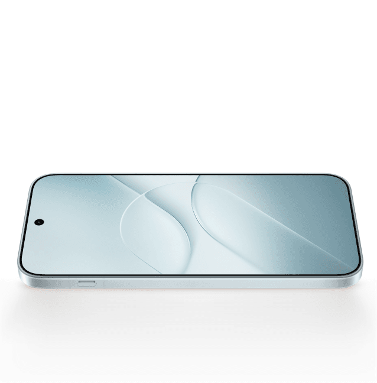
Brillo pico alto y precisión cromática para revivir fotos HDR exactamente como se capturaron.
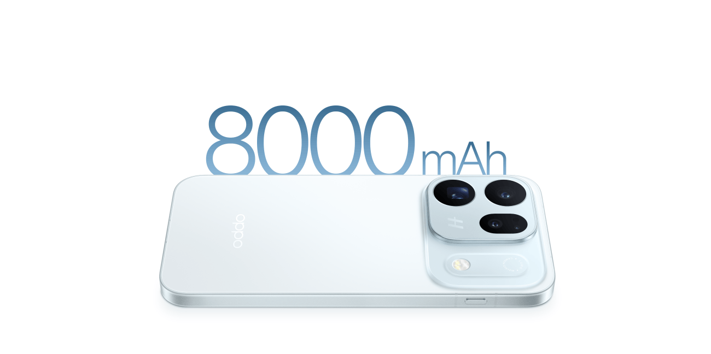
Autonomía sobrada para todo el día de trabajo y entretenimiento sin depender del cargador.
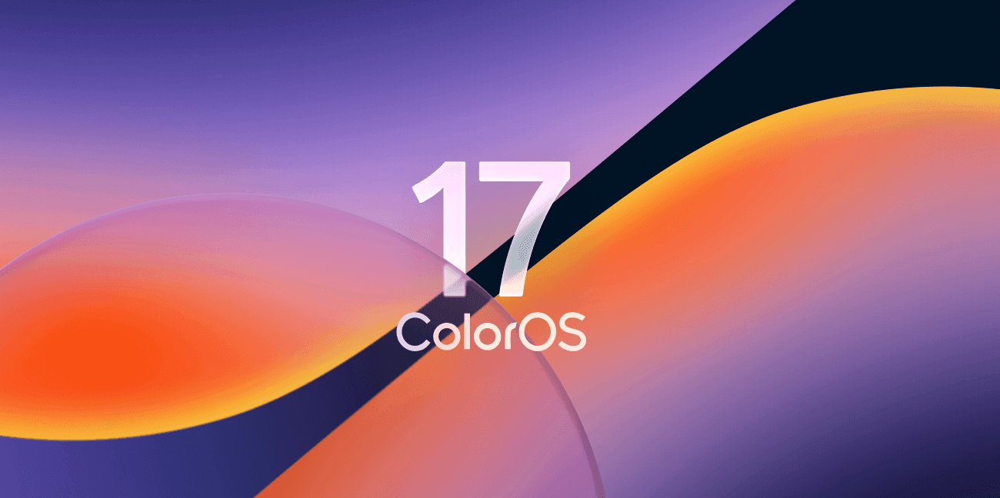
Motor de fluidez e inteligencia integrada en todo el sistema.
Larga vida útil optimizada para mantener la rapidez como el primer día.
Detección inteligente en videollamadas para proteger al usuario contra suplantaciones.
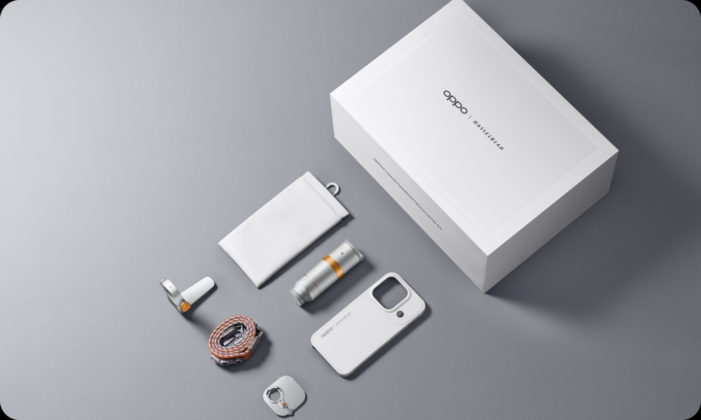
Lente externo dedicable para llevar la fotografía de distancia a otro nivel.
Combinación de estructura reforzada contra caídas con la máxima protección frente a polvo, agua e impactos cotidianos.
Diferenciadores clave para recomendar el equipo exacto según el perfil del cliente.
| Atributo | OPPO Find X10 | OPPO Find X10 Pro Max |
|---|---|---|
| Sistema de Cámaras | Cámara Hasselblad 200MP + LUMO Color & Framing | Triple Cámara 200MP + Sensor True Color 24 canales |
| Video Profesional | Captura HDR con pantalla ProXDR | Video 8K Log y rango dinámico HDR de 17 pasos |
| Rendimiento | ColorOS 17 con 6 años de fluidez garantizada | MediaTek Dimensity 9600 Pro (2 nm) + ColorOS 17 |
| Batería | 8,000 mAh | 8,000 mAh |
| Resistencia | Armour Shield + IP66 / IP68 / IP69 | Armour Shield + IP66 / IP68 / IP69 |
| Seguridad & IA | AI Deepfake Guard integrado | AI Deepfake Guard y ecosistema IA ColorOS 17 |
| Ecosistema Pro | Compatible con Kit Teleconvertidor Hasselblad | Compatible con Kit Cine Tilta KHRONOS |
| Acabados Oficiales | Diseño serie Find X10 (ver One Page) | Gris Titanio y Blanco Luna |
Muestra la batería de 8,000 mAh + certificación IP69 juntos: es muy poco común encontrar ultra potencia fotográfica con esa autonomía y resistencia.